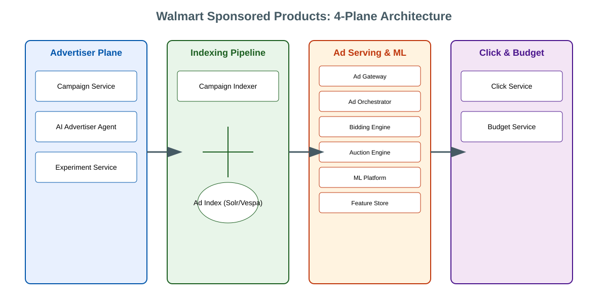
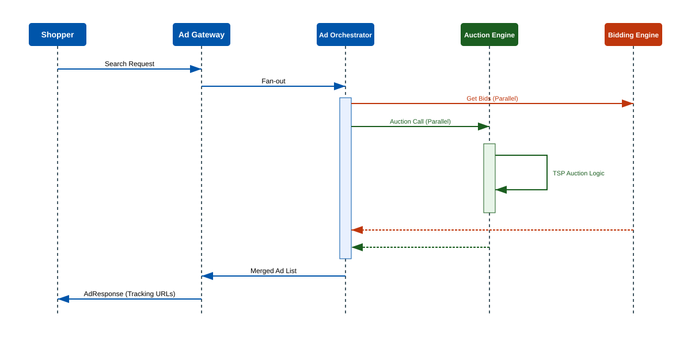
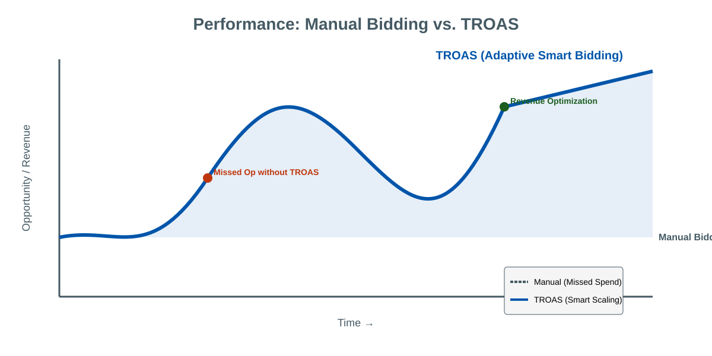
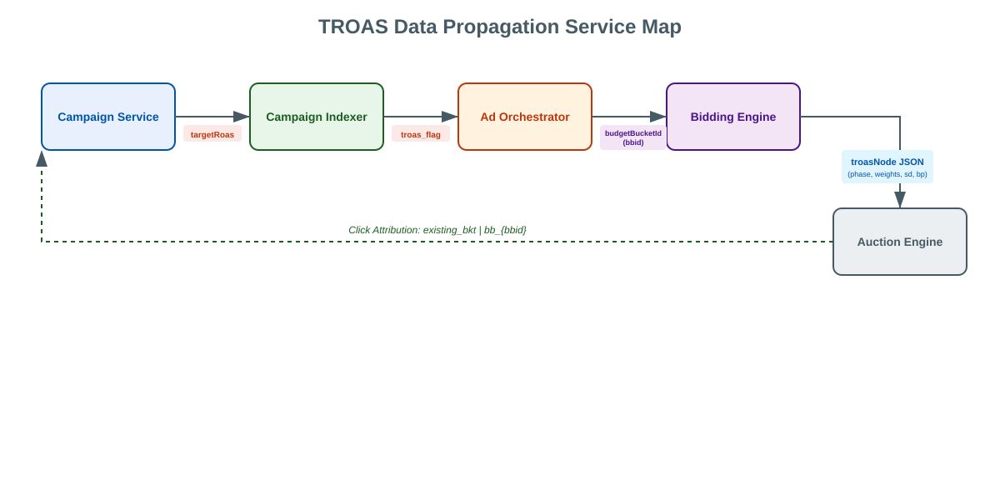
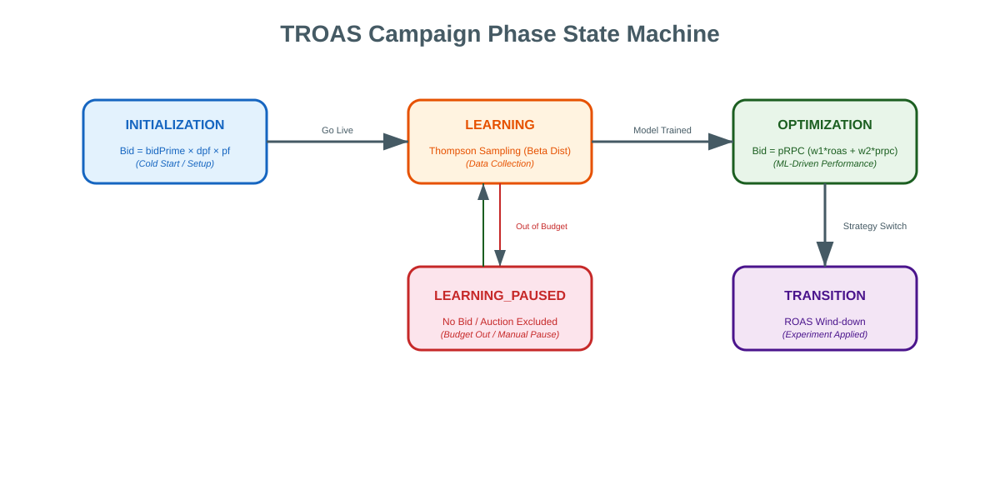
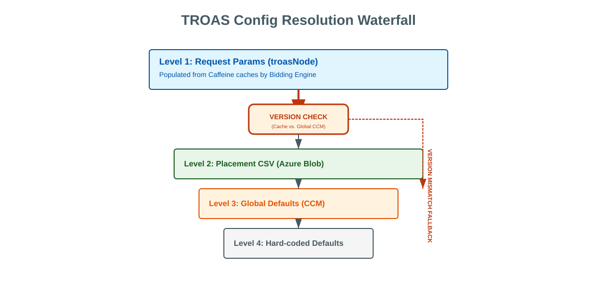
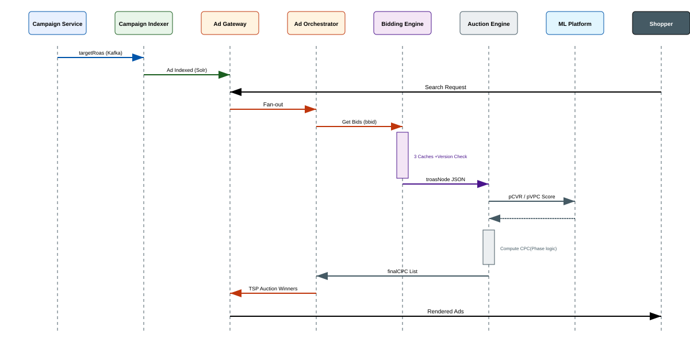
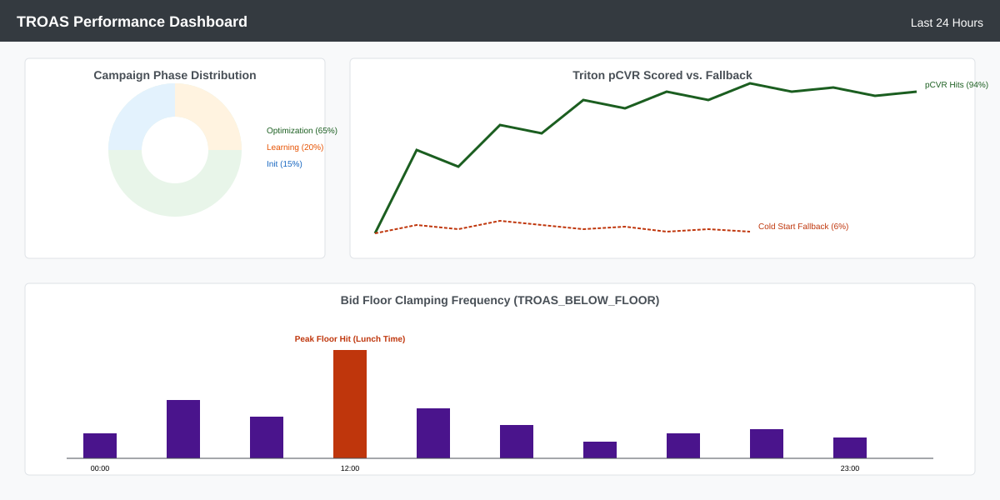
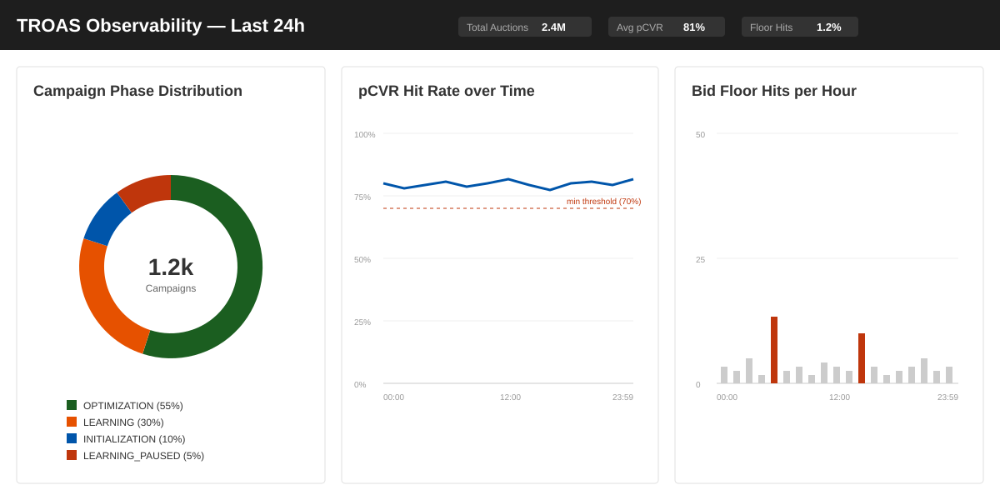

TROAS Smart Bidding — Architecture & Deep Dive
Harish G · April 2026


Why TSP? Incentive-compatible — advertisers bid true value. First-price leads to underbidding and auction instability.
Target Return on Ad Spend — how the system automatically adjusts bids to hit an advertiser's revenue target


Bidding Engine serializes per-campaign TROAS config into a JSON blob that rides with the gRPC bid request to the Auction Engine — no extra DB lookup at auction time.
Contains: phase bid bounds targetRoas day-part factor bid strategy weights
One strategy per campaign: either TROAS or Dynamic Bidding — never both. Campaign must be LIVE with a daily budget to be eligible.

Budget depletion pauses the phase without resetting it — resumes from same state when budget is restored.
Uses campaign-level historical bid data adjusted for placement and day-part factors. No ML inference — deterministic and fast.
System actively explores a discrete set of bid price candidates per auction to collect conversion signal. Uses a Bayesian bandit algorithm — no manual tuning of exploration rate.
Phase exits once enough signal is collected for the ML models to take over.
Offline models predict conversion probability and value-per-conversion for the item. Auction Engine combines these predictions with the targetRoas constraint to compute the optimal bid in real-time.
Two parallel tracks: full-score (GPU inference available) and fallback (baseline bid only).
After experiment is applied, bid gradually shifts from experiment baseline to full OPTIMIZATION to avoid auction instability. Configurable blend weights.
| Track | When | Bid source |
|---|---|---|
| Full-score | GPU available, item has features | ML model predictions |
| Fallback | Cold-start or inference timeout | Baseline bid only |
L1 hit rate target >90% — determines how often GPU cluster is actually invoked.
Keyed by ad group ID. Holds campaign phase, bid strategy weights, and campaign status. Read on every auction request — must be sub-millisecond.
Keyed by (ad group, item). Holds per-item bid bounds and ML model inputs. Fallback chain: item-specific → group default → platform default — keeps cache size O(campaigns) not O(campaigns × items).
Keyed by (ad group, date). Stores 24-hour bid adjustment vector — one multiplier per hour. Enables time-of-day bid boosting without a DB call per auction.

Each cache entry carries a version token from the config service. On mismatch, the Bidding Engine falls back to config-service defaults — no DB call, no downtime, instant rollback capability.

Campaign Service → Kafka campaign-events → Campaign Indexer writes biddingStrategy=TROAS, targetRoas, phase to Solr/Vespa
Ad Orchestrator reads TROAS flag from the index candidate, resolves the budget bucket, and calls the Bidding Engine via gRPC with the campaign's TROAS config attached
Auction Engine branches on campaign phase → full-score items run ML inference on the GPU cluster → bid is computed and clamped → enters TSP auction
TSP auction on finalCPC values → top-N ads → sp_Auction Engine_request_logs Kafka for analytics + model training

Campaign must be LIVE · have a daily budget · not already on TROAS · no other active experiments · targetRoas within platform-configured bounds · duration within allowed range
Each bid computation runs with a configurable deadline. On timeout: item is excluded from the auction response and a timeout metric is emitted. Prevents a slow cache read from blocking the entire auction.
| Decision | Chosen | Alternative | Why |
|---|---|---|---|
| LEARNING phase exploration | Bayesian bandit (auto-tunes) | ε-greedy | No exploration rate to tune; uncertainty shrinks automatically with data |
| Bid computation | ML predictions + targetRoas | Static manual bid | Adapts to real-time auction signals; manual bids can't scale to 10M campaigns |
| Bidding Engine cache invalidation | Version key via config service | TTL-only eviction | Zero-downtime rollout; instant rollback without DB schema change |
| Cache fallback key | Ad-group default (adGroupId,'0') | Per-item always | Reduces cache size from O(campaigns×items) to O(campaigns) |
| Budget enforcement | Atomic in-memory counter (Lua) | DB transactions | 200K writes/sec; DB serialization can't keep up at that rate |
| Click dedup | Cassandra TTL 900s | Redis SET NX | Multi-region replication built-in; no extra infra |
| Auction type | True Second Price (TSP) | First Price | Incentive-compatible — advertisers bid true value; no strategic underbidding |
The LEARNING phase needs hundreds of auctions to collect enough conversion signal. New advertisers see suboptimal ROAS early before the system has data.
Fix: warm-start from priors of similar campaigns in the same category instead of generic platform defaults.
The Bidding Engine's config store is backed by a relational DB. At 100M+ active campaigns it becomes a read hotspot under sustained auction QPS.
Fix: migrate to a wide-column store with row-level cache in front, decoupling read throughput from write consistency.
OpenTelemetry spans don't cross async Kafka boundaries. Can't trace a campaign creation all the way to its first auction win.
Fix: propagate trace context via Kafka message headers (W3C TraceContext).
DCN v2 predicts CTR only. Without CVR, ROAS optimization is limited to click-rate signals alone.
Multi-task CTR+CVR model planned for May 2026 — unlocks true ROAS optimization.

Thank you